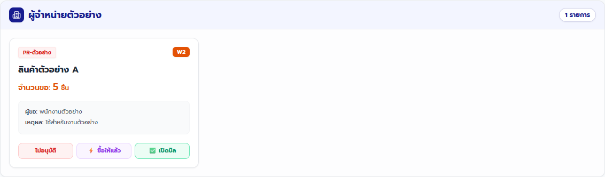
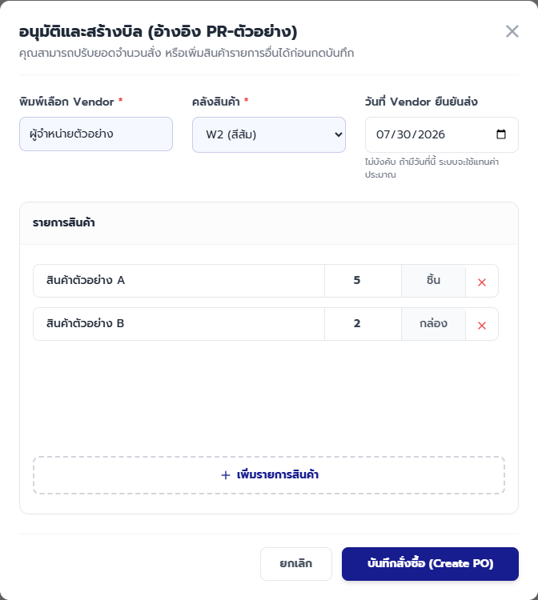
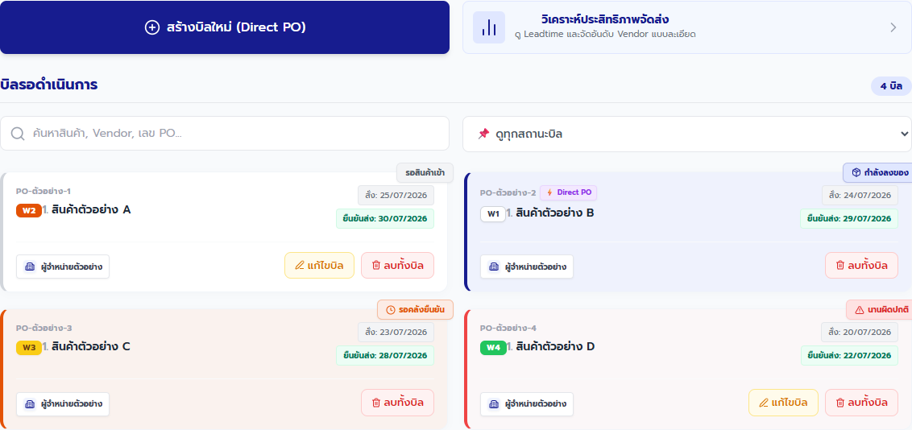
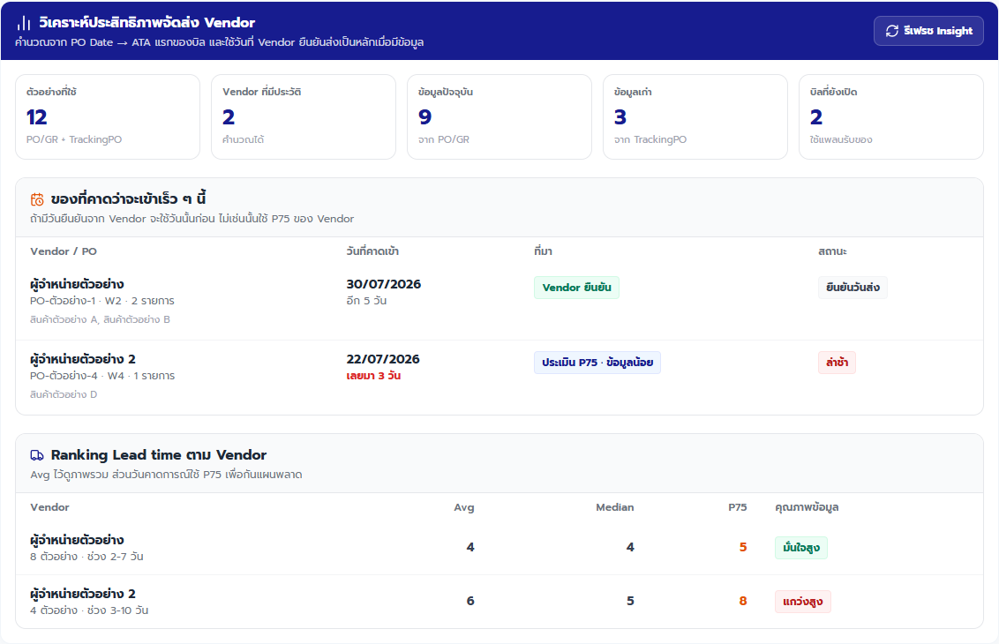
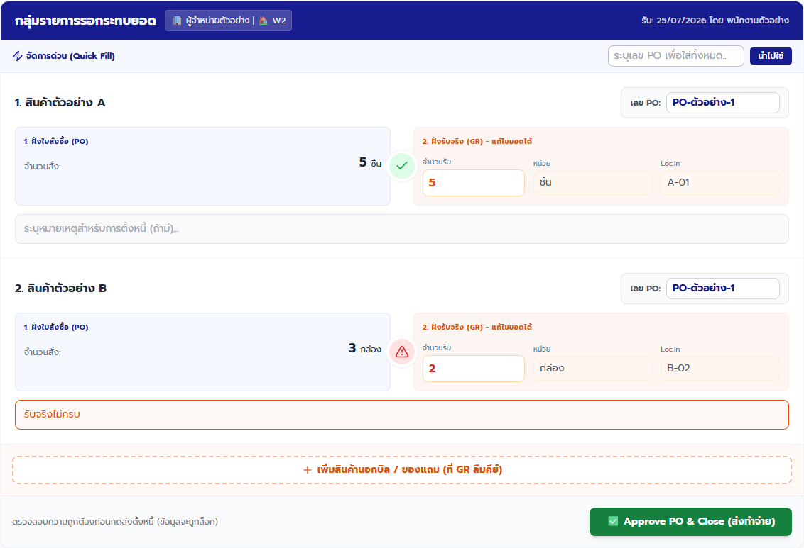
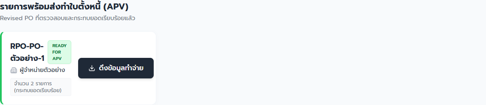

คู่มือพนักงาน · PO — จัดซื้อและกระทบยอด
คู่มือเปิด PO ติดตามของ และกระทบยอด
เปลี่ยนคำขอซื้อเป็น PO ติดตามการส่งมอบ และเทียบยอดรับจริงก่อนส่งต่อบัญชีโดยไม่เปิดหรือลบบิลผิดรายการ
ฉบับทดสอบภายใน: ใช้ตรวจขั้นตอนและความเข้าใจก่อนประกาศใช้
ส่วนที่ 1
เตรียมก่อนเริ่ม
- เปิด PO ผ่าน Main Portal และตรวจว่าชื่อด้านบนเป็นชื่อของคุณ
- ผู้จัดการ PR ต้องมีสิทธิ์ approvePR ผู้สร้างหรือแก้ PO ต้องมีสิทธิ์ createPO
- ผู้กดปิดกระทบยอดต้องมีสิทธิ์ closePO
- เตรียม PR หรือข้อมูล Direct PO, Vendor, คลัง, วันที่ Vendor ยืนยันส่ง, รายการสินค้า และเอกสารรับจริงจาก GR
ส่วนที่ 2
ทำตามขั้นตอน
-
พนักงานจัดซื้อ · ต้องมีสิทธิ์ approvePR
ตรวจ PR และเลือกผลที่ถูกต้อง
ทำ: ที่ “1. คำขอสั่งซื้อ (PR)” เทียบสินค้า จำนวน ผู้ขอ คลัง และเหตุผล แล้วเลือก “เปิดบิล”, “ซื้อให้แล้ว” หรือ “ไม่อนุมัติ” ให้ตรงเหตุการณ์
เช็ก: “เปิดบิล” เปิดฟอร์มสร้าง PO, “ซื้อให้แล้ว” ปิด PR ที่มี Direct PO รองรับแล้ว, และ “ไม่อนุมัติ” บันทึกผลพร้อมเหตุผลกลับไปยัง PR

ตรวจ PR ทีละรายการก่อนเลือกผล “ซื้อให้แล้ว” ใช้เฉพาะเมื่อมี Direct PO รองรับจริง ภาพอ้างอิง PO 20260722.01 -
พนักงานจัดซื้อ · ต้องมีสิทธิ์ approvePR หรือ createPO
กรอกและบันทึก PO
ทำ: เลือก Vendor และคลัง ใส่ “วันที่ Vendor ยืนยันส่ง” เมื่อมี ตรวจสินค้า จำนวน และหน่วย แล้วกด “บันทึกสั่งซื้อ (Create PO)” หนึ่งครั้ง หากไม่มี PR ให้เริ่มที่ “สร้างบิลใหม่ (Direct PO)”
เช็ก: ฟอร์มปิดและบิลใหม่ปรากฏใน “2. จัดการบิล (PO)” โดยเริ่มสถานะรอสินค้าเข้า

ตรวจ Vendor คลัง วันยืนยันส่ง และรายการทั้งหมดก่อนบันทึก ปุ่ม Direct PO ใช้เมื่อไม่มี PR ต้นทางเท่านั้น ภาพอ้างอิง PO 20260722.01 -
พนักงานจัดซื้อ
ติดตามสถานะบิลและกำหนดส่ง
ทำ: ที่ “2. จัดการบิล (PO)” ใช้ช่องค้นหาและตัวกรอง แล้วอ่านสถานะ “รอสินค้า”, “กำลังลงของ”, “รอคลังยืนยัน” หรือ “นานผิดปกติ” พร้อมวันที่ Vendor ยืนยันส่ง
เช็ก: พบบิลเดิมเพียงบิลเดียวและรู้ว่าคลังยังไม่เริ่มรับ กำลังทำ Draft รออนุมัติ หรือเลยกำหนดส่ง

ค้นหาและกรองสถานะ
ตัวอย่างสถานะบิล
สถานะบอกขั้นตอนของ GR ส่วน “นานผิดปกติ” หมายถึงเลยแผน ไม่ได้แปลว่ารับสินค้าแล้ว ภาพอ้างอิง PO 20260722.01 -
พนักงานจัดซื้อ · ใช้เพื่อวางแผนติดตาม Vendor
ดู Delivery Insight เมื่อจะติดตามของ
ทำ: กด “วิเคราะห์ประสิทธิภาพจัดส่ง” แล้วดู “ของที่คาดว่าจะเข้าเร็ว ๆ นี้” และ Ranking Lead time ตาม Vendor
เช็ก: เห็นวันที่คาดเข้า ที่มาของวัน และสถานะล่าช้า โดยแยกวัน “Vendor ยืนยัน” ออกจากค่าประเมิน P75

ของที่คาดว่าจะเข้า
Ranking Lead time
ใช้วัน Vendor ยืนยันเป็นหลัก ค่าประเมิน P75 เป็นข้อมูลช่วยวางแผนและต้องดูคุณภาพข้อมูลประกอบ ภาพอ้างอิง PO 20260722.01 -
ผู้ตรวจและปิดกระทบยอด · ต้องมีสิทธิ์ closePO
เทียบ PO กับของที่ GR รับจริง
ทำ: เมื่อบิลผ่าน GR Completed ให้เปิด “3. 2-Way Match” ตรวจเลข PO จำนวนสั่ง จำนวนรับ หน่วย และ Loc.In เขียนหมายเหตุเมื่อยอดต่าง แล้วกด “Approve PO & Close (ส่งทำจ่าย)” เมื่อเอกสารถูกต้อง
เช็ก: รายการที่ตรงมีเครื่องหมายถูก รายการที่ต่างมีสัญลักษณ์เตือนและเหตุผลครบ จากนั้นข้อมูลถูกล็อกและย้ายไปพร้อมทำ APV

เทียบจำนวน PO กับ GR
ปุ่มปิดกระทบยอด
ยึดยอดรับจริงจาก GR และเอกสาร ตรวจรายการเตือนทุกจุดก่อนปิด เพราะข้อมูลจะถูกล็อก ภาพอ้างอิง PO 20260722.01 -
พนักงานจัดซื้อและบัญชี
ตรวจว่าบิลพร้อมส่งต่อบัญชี
ทำ: เปิด “4. ใบตั้งหนี้ (APV)” และค้นหาบิลเดิม
เช็ก: พบบัตร “READY FOR APV” และจำนวนรายการที่กระทบยอดแล้ว ขั้นตอนทำจ่ายจริงให้ประสานบัญชีตามรอบงานบริษัท

บัตร Ready for APV ยืนยันว่ากระทบยอดแล้ว แต่ไม่ใช่หลักฐานว่าฝ่ายบัญชีทำจ่ายเสร็จ ภาพอ้างอิง PO 20260722.01
ส่วนที่ 3
เช็กก่อนจบงาน
งานเสร็จเมื่อครบทั้ง 5 ข้อ
- PR ที่อนุมัติแล้วมี PO เพียงบิลเดียว หรือ PR ปิดเป็น “ซื้อให้แล้ว” เฉพาะเมื่อ Direct PO รองรับจริง
- Vendor คลัง วันที่ยืนยันส่ง สินค้า จำนวน และหน่วยตรงกับเอกสาร
- สถานะ PO สอดคล้องกับงาน GR และไม่มีบิลซ้ำจากการกดบันทึกซ้ำ
- ทุกรายการ 2-Way Match มีเลข PO ยอดรับจริง และหมายเหตุเมื่อยอดต่าง
- บิลที่ปิดกระทบยอดแล้วแสดง “READY FOR APV”
ส่วนที่ 4
แก้ปัญหาที่พบบ่อย
เลือกข้อความที่ตรงกับหน้าจอ แล้วทำตามทีละข้อ
ไม่มีปุ่ม “เปิดบิล” หรือระบบแจ้ง “ไม่มีสิทธิ์ดำเนินการนี้”
- อย่าใช้บัญชีของคนอื่น
- เปิด PO ผ่าน Main Portal อีกครั้ง
- แจ้งหัวหน้าให้ตรวจสิทธิ์ approvePR, createPO หรือ closePO ตามหน้าที่
ต้องเลือก “ไม่อนุมัติ” หรือ “ซื้อให้แล้ว”
- เทียบ PR กับหลักฐานก่อนกด
- ถ้าไม่อนุมัติ ให้ใส่เหตุผลที่ผู้ขอเข้าใจได้
- ใช้ “ซื้อให้แล้ว” เฉพาะเมื่อพบ Direct PO ที่ตรงสินค้า จำนวน และคลัง
- อ่านกล่องยืนยันทุกครั้งและหยุดหากไม่แน่ใจ
ระบบแจ้ง “กรุณาเลือก Vendor และคลังสินค้าให้ครบถ้วน” หรือ “กรุณากรอกข้อมูลสินค้าให้ครบถ้วน”
- เลือก Vendor และคลังให้ตรงเอกสาร
- ตรวจชื่อสินค้า จำนวนมากกว่า 0 และหน่วยของทุกแถว
- ลบแถวที่ไม่ใช้ก่อนบันทึก
กดบันทึก PO แล้วโหลดนาน หรือไม่แน่ใจว่าสำเร็จ
- อย่ากดบันทึกซ้ำและอย่าเปิด Direct PO ใหม่
- ปิดฟอร์มเมื่อระบบตอบกลับ แล้วค้นหา Vendor สินค้า หรือเลข PO ใน “2. จัดการบิล (PO)”
- ถ้าพบบิลเดิม ให้ตรวจรายละเอียดและทำต่อจากบิลนั้น
- ถ้าไม่พบหรือข้อมูลไม่ชัด ให้หยุดและแจ้งหัวหน้าก่อนลองใหม่
บิลขึ้น “นานผิดปกติ”
- ตรวจวัน Vendor ยืนยันส่งและ Delivery Insight
- ติดตาม Vendor หรือผู้เกี่ยวข้องตามขั้นตอนบริษัท
- อย่าถือว่าสินค้ารับแล้วจนกว่า GR จะเปลี่ยนสถานะ
จำนวน PO กับ GR ไม่ตรง หรือมีสินค้านอกบิล
- เทียบเอกสารและของจริงกับผู้รับสินค้า
- ตรวจเลข PO และใส่เหตุผลในช่องหมายเหตุ
- เพิ่มสินค้านอกบิลหรือของแถมเฉพาะเมื่อยืนยันกับ GR แล้ว
- ห้ามกดปิดกระทบยอดหากยังไม่รู้ว่ายอดใดถูกต้อง
ระบบแจ้งให้ระบุเลข PO ก่อนส่งตั้งหนี้
- ใส่เลข PO ของแต่ละรายการให้ครบ
- ใช้ Quick Fill เฉพาะเมื่อทุกรายการอยู่เลข PO เดียวกัน
- ตรวจเลขอีกครั้งก่อนกดปิด
ต้องแก้ไขหรือลบทั้งบิล
- อย่าใช้ปุ่ม “แก้ไขบิล” หรือ “ลบทั้งบิล” เป็นขั้นตอนปกติ
- ตรวจ Vendor คลัง เลข PO สถานะ และหลักฐานกับหัวหน้าก่อน
- ถ้าบิลอยู่ระหว่าง Draft GR หรือรอคลังยืนยัน ให้ประสานคลังก่อนเปลี่ยนข้อมูล
เห็นข้อความว่ามีเวอร์ชันใหม่ หรือหน้าเปิดค้างไว้นาน
- หยุดทำรายการและกดรีโหลดตามข้อความ
- ค้นหาบิลเดิมและตรวจสถานะล่าสุดก่อนบันทึกต่อ
- ไม่มีปุ่ม “เปิดบิล” หรือระบบแจ้ง “ไม่มีสิทธิ์ดำเนินการนี้”
-
- อย่าใช้บัญชีของคนอื่น
- เปิด PO ผ่าน Main Portal อีกครั้ง
- แจ้งหัวหน้าให้ตรวจสิทธิ์ approvePR, createPO หรือ closePO ตามหน้าที่
- ต้องเลือก “ไม่อนุมัติ” หรือ “ซื้อให้แล้ว”
-
- เทียบ PR กับหลักฐานก่อนกด
- ถ้าไม่อนุมัติ ให้ใส่เหตุผลที่ผู้ขอเข้าใจได้
- ใช้ “ซื้อให้แล้ว” เฉพาะเมื่อพบ Direct PO ที่ตรงสินค้า จำนวน และคลัง
- อ่านกล่องยืนยันทุกครั้งและหยุดหากไม่แน่ใจ
- ระบบแจ้ง “กรุณาเลือก Vendor และคลังสินค้าให้ครบถ้วน” หรือ “กรุณากรอกข้อมูลสินค้าให้ครบถ้วน”
-
- เลือก Vendor และคลังให้ตรงเอกสาร
- ตรวจชื่อสินค้า จำนวนมากกว่า 0 และหน่วยของทุกแถว
- ลบแถวที่ไม่ใช้ก่อนบันทึก
- กดบันทึก PO แล้วโหลดนาน หรือไม่แน่ใจว่าสำเร็จ
-
- อย่ากดบันทึกซ้ำและอย่าเปิด Direct PO ใหม่
- ปิดฟอร์มเมื่อระบบตอบกลับ แล้วค้นหา Vendor สินค้า หรือเลข PO ใน “2. จัดการบิล (PO)”
- ถ้าพบบิลเดิม ให้ตรวจรายละเอียดและทำต่อจากบิลนั้น
- ถ้าไม่พบหรือข้อมูลไม่ชัด ให้หยุดและแจ้งหัวหน้าก่อนลองใหม่
- บิลขึ้น “นานผิดปกติ”
-
- ตรวจวัน Vendor ยืนยันส่งและ Delivery Insight
- ติดตาม Vendor หรือผู้เกี่ยวข้องตามขั้นตอนบริษัท
- อย่าถือว่าสินค้ารับแล้วจนกว่า GR จะเปลี่ยนสถานะ
- จำนวน PO กับ GR ไม่ตรง หรือมีสินค้านอกบิล
-
- เทียบเอกสารและของจริงกับผู้รับสินค้า
- ตรวจเลข PO และใส่เหตุผลในช่องหมายเหตุ
- เพิ่มสินค้านอกบิลหรือของแถมเฉพาะเมื่อยืนยันกับ GR แล้ว
- ห้ามกดปิดกระทบยอดหากยังไม่รู้ว่ายอดใดถูกต้อง
- ระบบแจ้งให้ระบุเลข PO ก่อนส่งตั้งหนี้
-
- ใส่เลข PO ของแต่ละรายการให้ครบ
- ใช้ Quick Fill เฉพาะเมื่อทุกรายการอยู่เลข PO เดียวกัน
- ตรวจเลขอีกครั้งก่อนกดปิด
- ต้องแก้ไขหรือลบทั้งบิล
-
- อย่าใช้ปุ่ม “แก้ไขบิล” หรือ “ลบทั้งบิล” เป็นขั้นตอนปกติ
- ตรวจ Vendor คลัง เลข PO สถานะ และหลักฐานกับหัวหน้าก่อน
- ถ้าบิลอยู่ระหว่าง Draft GR หรือรอคลังยืนยัน ให้ประสานคลังก่อนเปลี่ยนข้อมูล
- เห็นข้อความว่ามีเวอร์ชันใหม่ หรือหน้าเปิดค้างไว้นาน
-
- หยุดทำรายการและกดรีโหลดตามข้อความ
- ค้นหาบิลเดิมและตรวจสถานะล่าสุดก่อนบันทึกต่อ